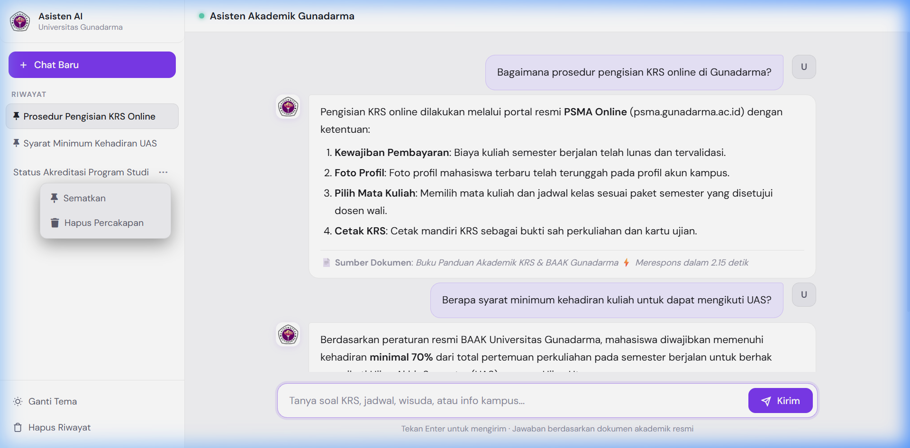

Skripsi S1 Sistem Informasi, 2026
Chatbot Informasi Akademik BAAK dengan Hybrid RAG
Asisten AI cerdas berbasis Retrieval-Augmented Generation (RAG) untuk layanan informasi BAAK Universitas Gunadarma. Menggabungkan pencarian leksikal BM25 Okapi dan Dense Vector Embedding (multilingual-e5-base) menggunakan Reciprocal Rank Fusion (RRF), dilengkapi Query Transformation otomatis (Groq LLaMA 3.3 70B & Google Gemini), transparansi sitasi dokumen resmi kampus, serta panel admin manajemen dokumen.
Hasil Pengujian & Evaluasi Ilmiah: Akurasi jawaban 86,67% dan 90,00% bebas halusinasi pada 30 skenario uji BAAK (respons 4,81 detik). Pada evaluasi retrieval hybrid, Hit Rate@5 mencapai 76,7% (+13,4 pt) dan MRR 0,644 dengan latensi pencarian 175 ms.